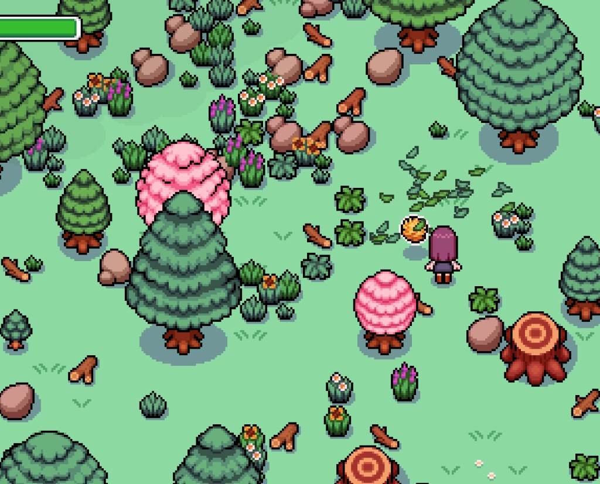
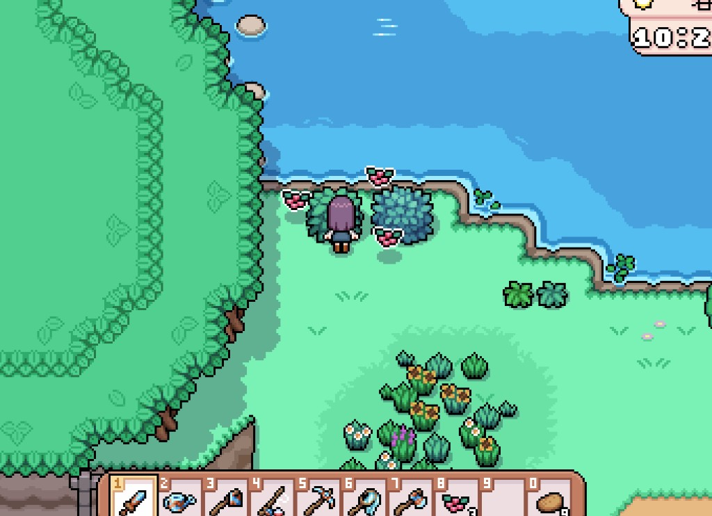
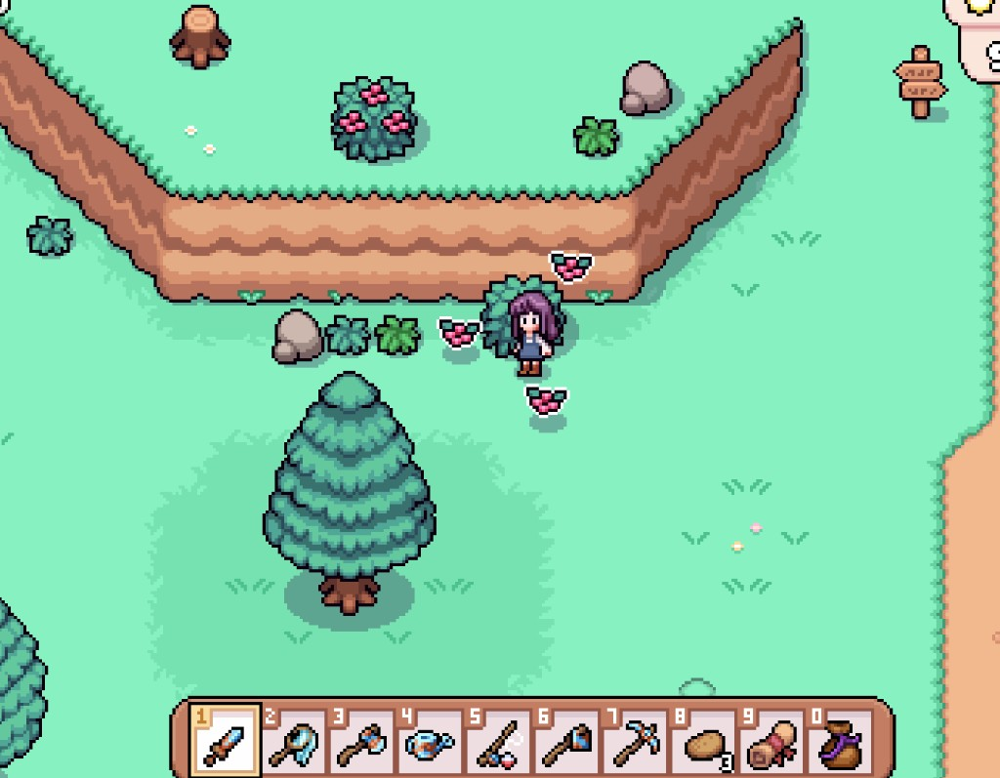
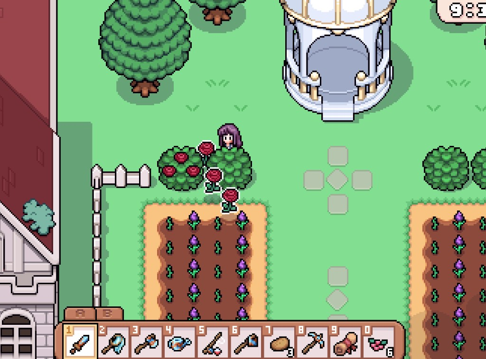

Quick answers
- Pick what is on your route to town or the mines.
- Keep unfamiliar finds for museum / quests before shipping all.
- Edible forage is cheap energy insurance.
- Seasonal bushes (berries, roses in summer) are destination picks.
- Bugs need a net—unlock that before insect FOMO.
A calm forage habit
House → town path, river edges, Narrows when you already head that way. Stop when inventory or energy complains.
Seasonal highlights from our save
Spring forage and berry bushes fed snacks and Errol quests. Summer roses grow on manor garden bushes near the gazebo—useful for Elsie requests. Confirm respawns in your version.
Safe to skip
- Clearing every bush daily
- Selling the last copy of something unique
Screenshots from our save
Real Fields of Mistria shots from our first-season play. Captions in English; in-game UI language may differ.




FAQ
Museum first or sell?
Donate first copies when you can; ship duplicates.
No bug net yet?
Skip insect goals until the quest/tool unlocks.
Unofficial fan guide. Not affiliated with NPC Studio. Verify details in your game version.